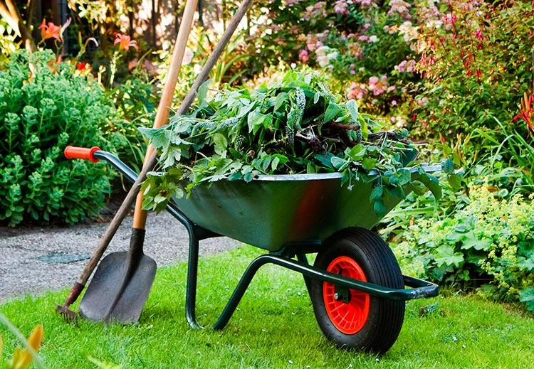
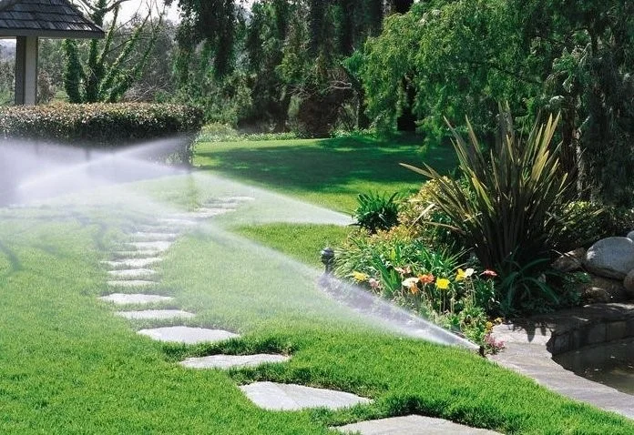
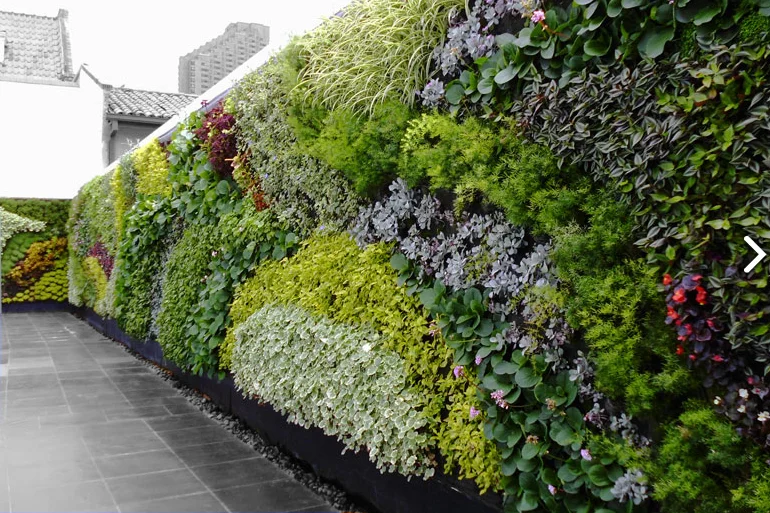
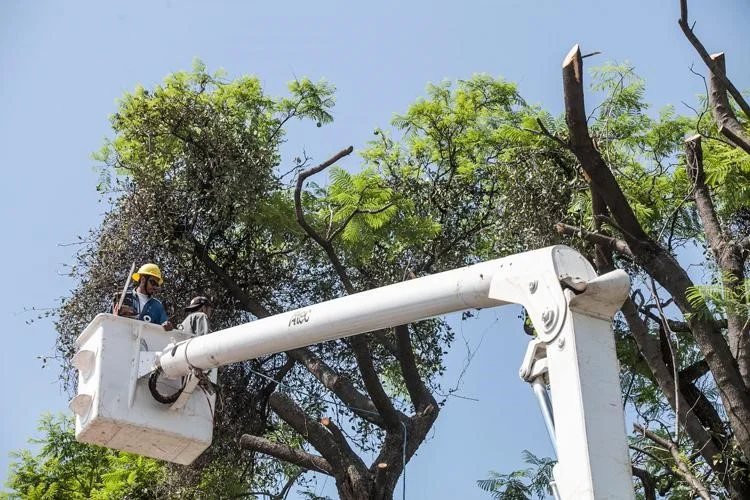
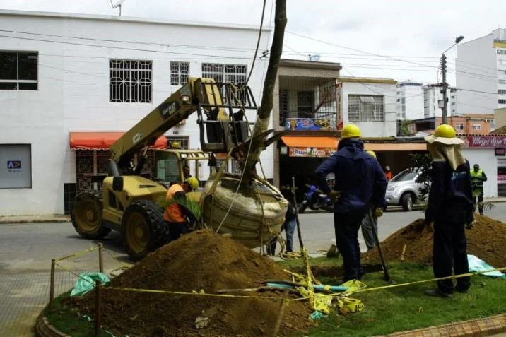
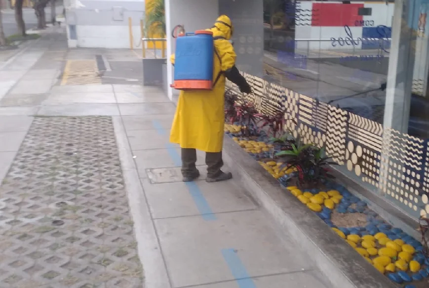
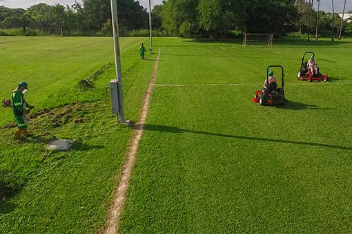

01Jardinería y mantenimiento
Instalación, cuidado y mantenimiento profesional de jardines y áreas verdes.
Ver servicio →Diseño, mantenimiento y cuidado de jardines para crear espacios naturales agradables, saludables y llenos de vida.
En Juan's Garden transformamos jardines y áreas verdes en ambientes agradables, funcionales y llenos de naturaleza.
Conoce nuestros servicios. Selecciona “Ver servicio” para conocer todos los detalles.

01Instalación, cuidado y mantenimiento profesional de jardines y áreas verdes.
Ver servicio →
02Diseñamos espacios verdes personalizados para hogares, empresas y diferentes ambientes.
Ver servicio →
03Instalación y mantenimiento de sistemas de riego para jardines y áreas verdes.
Ver servicio →
04Cuidado y poda de plantas, arbustos y vegetación para conservar jardines ordenados.
Ver servicio →
05Instalación, renovación y mantenimiento de césped para jardines y diferentes áreas verdes.
Ver servicio →
06Selección e instalación de plantas ornamentales para espacios interiores y exteriores.
Ver servicio →
07Orientación para planificar, mejorar y mantener jardines y áreas verdes.
Ver servicio →En Juan's Garden brindamos servicios especializados de instalación, cuidado y mantenimiento de jardines y áreas verdes.
Nuestro equipo trabaja para conservar espacios verdes saludables, ordenados y agradables, considerando las características particulares de cada jardín.
Evaluamos el tipo de vegetación, las condiciones del espacio y las necesidades del cliente para establecer las labores de mantenimiento más adecuadas.
Atendemos jardines residenciales, empresas, oficinas, condominios y otros espacios que requieran instalación, renovación o mantenimiento periódico de sus áreas verdes.
Cuéntanos qué necesitas y conversemos sobre las características de tu jardín o área verde.
Consultar por WhatsAppDiseñamos jardines buscando integrar vegetación, funcionalidad y estética para transformar cada espacio en un ambiente natural y agradable.
Cada proyecto comienza con una evaluación del espacio disponible, las condiciones de iluminación, las características del terreno y las necesidades del cliente.
A partir de esta información proponemos una distribución adecuada de plantas, césped, macetas y otros elementos que permitan aprovechar mejor el área disponible.
Nuestro objetivo es desarrollar jardines atractivos y funcionales, considerando también las necesidades posteriores de cuidado y mantenimiento.
Cuéntanos qué necesitas y conversemos sobre las características de tu jardín o área verde.
Consultar por WhatsAppUn sistema de riego correctamente planificado facilita el cuidado de las áreas verdes y permite distribuir el agua de acuerdo con las necesidades del jardín.
En Juan's Garden evaluamos las características del espacio para determinar una alternativa de riego acorde con la distribución de las plantas y las dimensiones del jardín.
La planificación del riego ayuda a mantener las plantas y el césped en mejores condiciones y facilita las labores habituales de mantenimiento.
También realizamos revisión y mantenimiento de sistemas existentes para identificar componentes que requieran regulación, limpieza o reemplazo.
Cuéntanos qué necesitas y conversemos sobre las características de tu jardín o área verde.
Consultar por WhatsAppLa poda forma parte del mantenimiento periódico de muchos jardines y contribuye a conservar la forma y el orden de la vegetación.
Realizamos trabajos de poda considerando el tipo de planta, su tamaño y las características del espacio donde se encuentra.
El mantenimiento puede incluir además limpieza, retiro de material vegetal y acondicionamiento general de las áreas verdes.
Nuestro servicio está orientado a jardines residenciales, empresariales y otros espacios que necesiten atención periódica.
Cuéntanos qué necesitas y conversemos sobre las características de tu jardín o área verde.
Consultar por WhatsAppEl césped permite crear superficies verdes uniformes y puede convertirse en uno de los elementos principales del jardín.
Antes de la instalación evaluamos las condiciones del área y realizamos las labores necesarias para preparar adecuadamente el espacio.
También podemos trabajar sobre jardines existentes que requieran recuperación o renovación de sectores deteriorados.
Posteriormente, el mantenimiento adecuado permite conservar una mejor apariencia del césped y del conjunto del jardín.
Cuéntanos qué necesitas y conversemos sobre las características de tu jardín o área verde.
Consultar por WhatsAppLas plantas ornamentales permiten incorporar naturaleza, textura y diferentes formas a los ambientes interiores y exteriores.
Te ayudamos a seleccionar plantas considerando el espacio disponible, las condiciones de luz y las características del ambiente.
Podemos incorporar las plantas como parte de un nuevo jardín o utilizarlas para renovar espacios que ya cuentan con vegetación.
También brindamos orientación para su ubicación y mantenimiento, buscando que cada especie se integre adecuadamente al espacio.
Cuéntanos qué necesitas y conversemos sobre las características de tu jardín o área verde.
Consultar por WhatsAppCada jardín presenta condiciones diferentes. Por ello brindamos asesoramiento para ayudarte a tomar mejores decisiones sobre tus áreas verdes.
Podemos evaluar el estado general del jardín, la distribución de las plantas y las necesidades de mantenimiento del espacio.
La asesoría puede utilizarse tanto para organizar un nuevo proyecto como para identificar mejoras en un jardín existente.
Nuestro objetivo es brindarte recomendaciones prácticas de acuerdo con las características del espacio y el resultado que deseas obtener.
Cuéntanos qué necesitas y conversemos sobre las características de tu jardín o área verde.
Consultar por WhatsAppEn Juan's Garden nos dedicamos al diseño, cuidado y mantenimiento de jardines y áreas verdes.
Nuestro objetivo es crear y conservar espacios naturales que aporten belleza, bienestar y armonía.
Trabajamos considerando las características del espacio y las necesidades particulares de cada cliente.
Jardinería, mantenimiento y cuidado de áreas verdes.
Cuéntanos qué necesitas y conversemos sobre tu próximo proyecto.
Cotizar por WhatsAppEstamos listos para ayudarte a transformar y cuidar tus espacios verdes.
Plantas y Naturaleza
Solicita información o una cotización sobre nuestros servicios de jardinería.